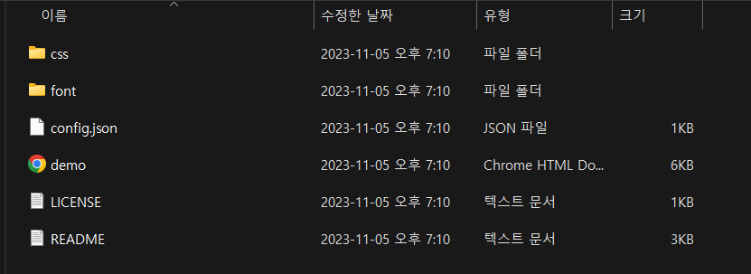
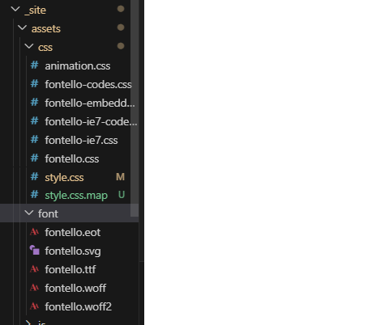
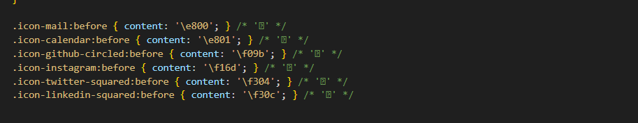
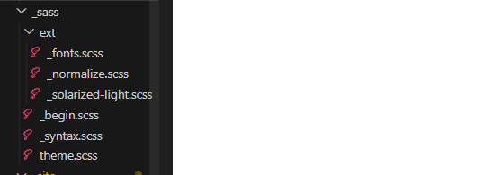
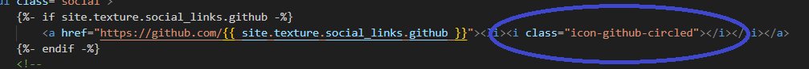
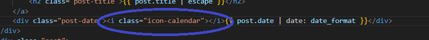
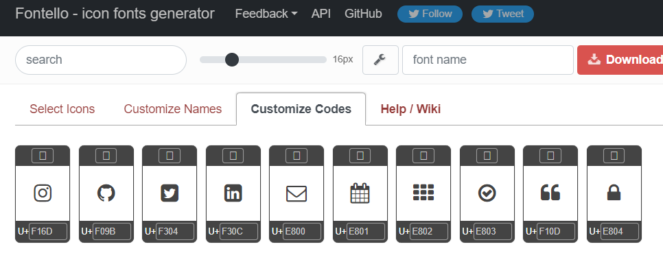
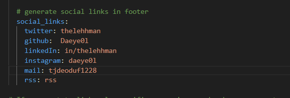
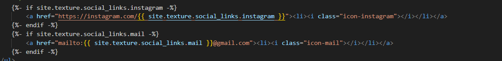

Fontello 라이브러리에서 필요한 아이콘을 다운로드 하고 적용한 후 소셜링크를 적용한 과정을 포스팅했다.
1. Fontello사이트에 들어가서 필요한 아이콘 다운로드 하기
-
fontello 사이트에 들어가서 필요한 아이콘들을 선택한다. (아이콘을 선택할 때 원래 블로그에 적용되고 있던 아이콘과 추가로 적용하고 싶은 아이콘을 같이 선택해야 한다.)

-
zip파일을 다운로드 한 후 압축을 푼다. 
2. 다운 받은 아이콘 적용하기
-
블로그 폴더 중에 css와 font폴더가 있는지 찾아본다. 
-
압축을 푼 파일에 있던 font파일은 블로그 디렉토리에 있던 font 파일로 대체해도 되지만 css 파일은 모두 복사해서 블로그 디렉토리에 있는 css파일로 붙여넣기 한다. (블로그에 적용되고 있던 다른 css파일들이 있을 수 있기 때문)
-
fontello.css파일의 맨 아래에 있는 해당 부분을 복사해둔다. 
-
_sass폴더 아래에 있는 _fonts.scss파일로 들어가 가장 아랫 부분에 아이콘 설정들을 복사해둔 내용으로 변경한다. 
-
이제 html문서 속 원하는 위치에 태그를 생성하고 사용한다.  
-
이렇게 해도 적용이 되지 않는다면 처음 다운 받았을 때 아이콘의 유니코드와 내가 적용한 코드의 유니코드가 같은지 확인해서 수정해보기 바란다. 
3. 소셜 링크 적용하기
-
우선 _config.yml에 소셜링크 설정 코드가 있는지 확인하고, 없다면 다운 받은 테마의 README.md를 읽어보고 소셜링크 관련 내용이 있는지 찾아본다. 
-
html a태그를 사용해 링크를 적용한다. _config.yml에서 설정한 부분이 중괄호에 해당하고 거기에 맞게 형식을 수정한다. (메일 아이콘의 경우 mailto:OOO@gamil.com를 사용하면 설정한 메일 주소로 메일을 보낼 수 있다.) 